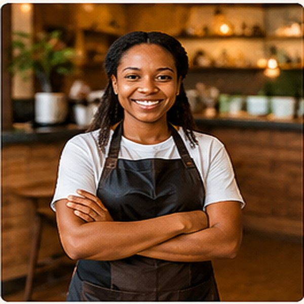

Quality
Only freshly roasted, single-origin Kenyan beans.
The people behind the pour

Our story · Since 2019
Savanna Brew Café opened in 2019 with one small espresso machine and a big dream: to celebrate Kenyan coffee. Founder Amina Otieno grew up on her grandparents' coffee farm in Nyeri and wanted to bring that flavour to the city.
Today the café supports local farmers, uses eco-friendly packaging and hosts community events every month.
“Every cup is a chance to honour the people and places that make Kenyan coffee special.”— Amina Otieno, Founder
What matters to us
Only freshly roasted, single-origin Kenyan beans.
Fair prices for farmers and a welcoming space for all.
Compostable cups and zero-waste pastries.